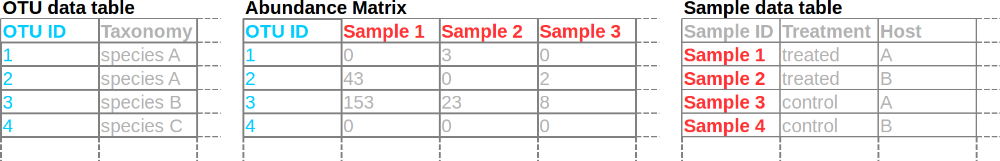
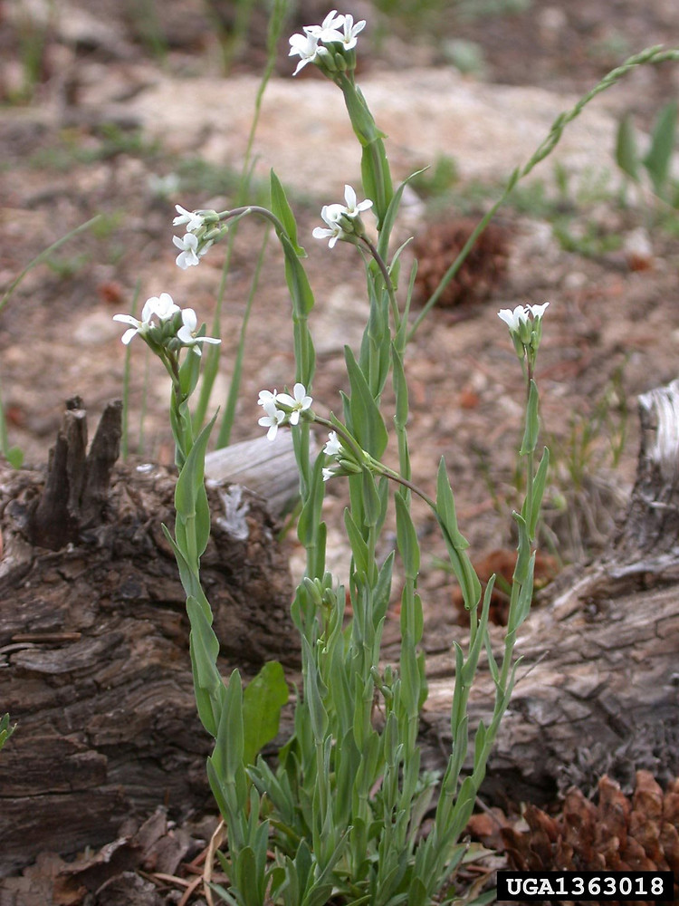

Getting data into R
Typical format for microbiome data
Most pipelines for processing high-throughput amplicon data, such as mothur, QIIME, and dada2, result in a matrix of read counts. One dimension of this matrix (i.e. the rows or the columns) consists of Operational Taxonomic Units (OTUs), phylotypes, or amplicon sequence variants (ASVs) (all ways to “bin” similar read sequences). The other dimension consists of samples. Different tools will expect/output different orientations of the matrix, but, in our case, columns are samples and rows are OTUs. Sometimes the OTU data and the abundance matrix are two separate tables. There is usually another table with sample information in rows. This makes it easy to add lots of additional sample data columns that can be used to subset the data. Each sample and OTU will have an unique ID.

Importing data into R
Importing data into R can be quite easy if the data is formatted well, but can be a very frustrating experience otherwise. An example of well-formatted data is .csv (comma-separated value) or .tsv (tab-separated value) files, each with a single table and no additional comments or formatting (e.g. merged cells). Either of these formats might also have a .txt extension (the extension does not really matter; its for humans, not computers). For more information on correct data formatting, see the data formating section of our guide for reporducible research. You should always import the raw output data whenever possible and avoid any “manual” (i.e. non-scripted) modification of the data, especially in programs like Excel, which are known to mangle data from time to time (Zeeberg et al. (2004)).
Throughout this workshop, we will be using data from Wagner et al. (2016), a study on the effects of plant age, genotype, and environment on the bacterial microbiome of Boechera stricta, a perennial herb in the mustard family. Here is a photo of Boechera stricta taken by Mary Ellen Harte:

Wagner et al. (2016) released their raw data with the article and it is available here on dryad. This is a great example of how to share your raw data!
There are many
functions
commonly used to read tabular data, including the
base R
ones like read.table and read.csv, but we will
be using functions from the new readr
package, which returns
tibbles
instead of data.frames (A “table” in R).
library(readr) # Loads the readr package so we can use `read_tsv`Tibbles are a type of data.frame with some fancier
printing and more consistent behavior. Click
here to
download the OTU table. Lets read in the raw OTU table first:
otu_data <- read_tsv("otuTable97.txt.bz2") # You might need to change the path to the file
print(otu_data) # You can also enter just `otu_data` to print it## # A tibble: 47,806 × 1,699
## OTU_ID M1024P1833 M1551…¹ M1551…² M1551…³ M1551…⁴ M1551…⁵ M1551…⁶ M1551…⁷ M1551…⁸ M1551…⁹ M1551…˟
## <dbl> <dbl> <dbl> <dbl> <dbl> <dbl> <dbl> <dbl> <dbl> <dbl> <dbl> <dbl>
## 1 1 0 0 0 0 0 0 0 0 0 0 0
## 2 2 41 22 4 726 112492 2 413 2 1 65 2
## 3 3 67 65 12 13514 1 4 13314 70 5929 13893 11023
## 4 4 3229 13679 1832 951 113 2496 567 2428 2156 948 647
## 5 5 1200 92 3530 2008 0 183 2087 292 1058 1334 819
## 6 6 219 1980 1200 499 1 781 214 2273 171 427 74
## 7 7 485 5123 755 4080 443 1278 2193 401 5320 2491 2408
## 8 8 840 7079 3760 22 0 2699 22 2870 32 21 35
## 9 9 40 82 91 881 1 449 1121 90 2283 146 941
## 10 10 11 79 277 2879 1 0 6811 14 243 2726 334
## # … with 47,796 more rows, 1,687 more variables: M1551P48 <dbl>, M1551P4 <dbl>, M1551P52 <dbl>,
## # M1551P3 <dbl>, M1551P15 <dbl>, M1551P31 <dbl>, M1551P75 <dbl>, M1551P88 <dbl>, M1551P47 <dbl>,
## # M1551P77 <dbl>, …, and abbreviated variable names ¹M1551P81, ²M1551P57, ³M1551P85, ⁴M1551P28,
## # ⁵M1551P29, ⁶M1551P38, ⁷M1551P90, ⁸M1551P71, ⁹M1551P12, ˟M1551P84
This is a big data set, with 47,806 rows (OTUs) and 1,699 columns (1,698 samples and an OTU ID). If your computer cannot load this file, don’t worry, we will provide a subset later for the rest of the workshop.
In this data set, the taxonomic classifications for the OTUs are in a different file. This information could have been included as additional columns in the OTU table and often is in other data sets. Click here to download the taxonomic classifications table.
tax_data <- read_tsv("taxAssignments97.txt")
print(tax_data) # You can also enter `tax_data` to print it## # A tibble: 47,806 × 8
## `OTU ID` taxonomy Kingdom Phylum Class Order Family Confi…¹
## <chr> <chr> <chr> <chr> <chr> <chr> <chr> <dbl>
## 1 OTU_1 Unassigned Unassi… Unass… Unas… Unas… Unass… 1
## 2 OTU_10 Root;k__Bacteria;p__Bacteroidetes;c__Sphingo… Bacter… Bacte… Sphi… Sphi… Sphin… 1
## 3 OTU_100 Root;k__Bacteria;p__Cyanobacteria;c__Chlorop… Bacter… Cyano… Chlo… Chlo… NA 1
## 4 OTU_1000 Root;k__Bacteria;p__Actinobacteria;c__Actino… Bacter… Actin… Acti… Acti… Actin… 0.67
## 5 OTU_10000 Unassigned Unassi… Unass… Unas… Unas… Unass… 1
## 6 OTU_10001 Root;k__Bacteria;p__Chlamydiae;c__Chlamydiia… Bacter… Chlam… Chla… Chla… Parac… 1
## 7 OTU_10002 Root;k__Bacteria;p__Proteobacteria;c__Alphap… Bacter… Prote… Alph… NA NA 1
## 8 OTU_10003 Unassigned Unassi… Unass… Unas… Unas… Unass… 1
## 9 OTU_10004 Unassigned Unassi… Unass… Unas… Unas… Unass… 1
## 10 OTU_10005 Root;k__Bacteria;p__Cyanobacteria;c__4C0d-2;… Bacter… Cyano… 4C0d… MLE1… NA 1
## # … with 47,796 more rows, and abbreviated variable name ¹Confidence
Although these data are very well-formatted compared to most, there
are still a few issues. The “OTU ID” column contains a space in the name
(hence the back ticks), which makes it a bit more annoying to work with
in R. More importantly, the OTU IDs in the taxonomy table are prefixed
with “OTU_” and those in the OTU table are not, so we have to remove
that prefix to make the two match up. The functions sub and
gsub are used to search and replace parts of text;
sub replaces only the first match and gsub
replaces all matches. Replacing with nothing ("")
effectively searches and deletes.
tax_data$`OTU ID` <- sub(tax_data$`OTU ID`, # ` are needed because of the space
pattern = "OTU_", replacement = "")
print(tax_data) ## # A tibble: 47,806 × 8
## `OTU ID` taxonomy Kingdom Phylum Class Order Family Confi…¹
## <chr> <chr> <chr> <chr> <chr> <chr> <chr> <dbl>
## 1 1 Unassigned Unassi… Unass… Unas… Unas… Unass… 1
## 2 10 Root;k__Bacteria;p__Bacteroidetes;c__Sphingob… Bacter… Bacte… Sphi… Sphi… Sphin… 1
## 3 100 Root;k__Bacteria;p__Cyanobacteria;c__Chloropl… Bacter… Cyano… Chlo… Chlo… NA 1
## 4 1000 Root;k__Bacteria;p__Actinobacteria;c__Actinob… Bacter… Actin… Acti… Acti… Actin… 0.67
## 5 10000 Unassigned Unassi… Unass… Unas… Unas… Unass… 1
## 6 10001 Root;k__Bacteria;p__Chlamydiae;c__Chlamydiia;… Bacter… Chlam… Chla… Chla… Parac… 1
## 7 10002 Root;k__Bacteria;p__Proteobacteria;c__Alphapr… Bacter… Prote… Alph… NA NA 1
## 8 10003 Unassigned Unassi… Unass… Unas… Unas… Unass… 1
## 9 10004 Unassigned Unassi… Unass… Unas… Unas… Unass… 1
## 10 10005 Root;k__Bacteria;p__Cyanobacteria;c__4C0d-2;o… Bacter… Cyano… 4C0d… MLE1… NA 1
## # … with 47,796 more rows, and abbreviated variable name ¹Confidence
Although we could proceed with the analysis using separate OTU and
taxonomy tables, lets combine them to simplify things. Since the rows
are in different order, we need to combine (aka “join”) them based on
their OTU ID. We will use the dplyr
package for this.
library(dplyr) # Loads the dplyr package so we can use `left_join`
tax_data$`OTU ID` <- as.character(tax_data$`OTU ID`) # Must be same type for join to work
otu_data$OTU_ID <- as.character(otu_data$OTU_ID) # Must be same type for join to work
otu_data <- left_join(otu_data, tax_data,
by = c("OTU_ID" = "OTU ID")) # identifies cols with shared IDs
print(otu_data)## # A tibble: 47,806 × 1,706
## OTU_ID M1024P1833 M1551…¹ M1551…² M1551…³ M1551…⁴ M1551…⁵ M1551…⁶ M1551…⁷ M1551…⁸ M1551…⁹ M1551…˟
## <chr> <dbl> <dbl> <dbl> <dbl> <dbl> <dbl> <dbl> <dbl> <dbl> <dbl> <dbl>
## 1 1 0 0 0 0 0 0 0 0 0 0 0
## 2 2 41 22 4 726 112492 2 413 2 1 65 2
## 3 3 67 65 12 13514 1 4 13314 70 5929 13893 11023
## 4 4 3229 13679 1832 951 113 2496 567 2428 2156 948 647
## 5 5 1200 92 3530 2008 0 183 2087 292 1058 1334 819
## 6 6 219 1980 1200 499 1 781 214 2273 171 427 74
## 7 7 485 5123 755 4080 443 1278 2193 401 5320 2491 2408
## 8 8 840 7079 3760 22 0 2699 22 2870 32 21 35
## 9 9 40 82 91 881 1 449 1121 90 2283 146 941
## 10 10 11 79 277 2879 1 0 6811 14 243 2726 334
## # … with 47,796 more rows, 1,694 more variables: M1551P48 <dbl>, M1551P4 <dbl>, M1551P52 <dbl>,
## # M1551P3 <dbl>, M1551P15 <dbl>, M1551P31 <dbl>, M1551P75 <dbl>, M1551P88 <dbl>, M1551P47 <dbl>,
## # M1551P77 <dbl>, …, and abbreviated variable names ¹M1551P81, ²M1551P57, ³M1551P85, ⁴M1551P28,
## # ⁵M1551P29, ⁶M1551P38, ⁷M1551P90, ⁸M1551P71, ⁹M1551P12, ˟M1551P84
There are so many columns that all of them are not shown in the print out, but we can verify that they are there by looking at the last 10 column names:
tail(colnames(otu_data), n = 10) # `tail` returns the last n elements## [1] "M1958P1043" "M1691P1526" "M1691P1557" "taxonomy" "Kingdom" "Phylum" "Class"
## [8] "Order" "Family" "Confidence"
Next, lets load the sample data. Click here to download the sample data table.
sample_data <- read_tsv("SMD.txt",
col_types = "cccccccccccccccc") # each "c" means a column of "character"
print(sample_data) # You can also enter `sample_data` to print it## # A tibble: 1,698 × 16
## SampleID Name Plant…¹ Type Exper…² Cohort Harve…³ Age Site Treat…⁴ Line Genot…⁵ Block
## <chr> <chr> <chr> <chr> <chr> <chr> <chr> <chr> <chr> <chr> <chr> <chr> <chr>
## 1 M1024P1788 R_026.ro… R_026 root fieldB… 2008 2011 3 LTM field 26 ril NA
## 2 M1024P1791 R_073.ro… R_073 root fieldB… 2008 2011 3 LTM field 73 ril NA
## 3 M1024P1795 R_088.ro… R_088 root fieldB… 2009 2011 2 LTM field 88 ril NA
## 4 M1024P1807 R_156.ro… R_156 root fieldB… 2009 2011 2 LTM field 156 ril NA
## 5 M1955P804 1_A_1.ro… 1_A_1 root ecoGH NA 2011 NA Duke MAHsoil par1… PAR b01
## 6 M1956P837 1_A_12.r… 1_A_12 root ecoGH NA 2011 NA Duke MAHsoil mah3… MAH b01
## 7 M1957P983 1_A_3.ro… 1_A_3 root ecoGH NA 2011 NA Duke MAHsoil silL… SIL b01
## 8 M1956P845 1_A_4.ro… 1_A_4 root ecoGH NA 2011 NA Duke MAHsoil par1… PAR b01
## 9 M1957P987 1_A_7.ro… 1_A_7 root ecoGH NA 2011 NA Duke MAHsoil par9… PAR b01
## 10 M1957P923 1_A_8.ro… 1_A_8 root ecoGH NA 2011 NA Duke MAHsoil mil5… MIL b01
## # … with 1,688 more rows, 3 more variables: oldPlate <chr>, newPlate <chr>, Analysis <chr>, and
## # abbreviated variable names ¹Plant_ID, ²Experiment, ³Harvested, ⁴Treatment, ⁵Genotype
Note how the number of sample columns in otu_data is
equal to the number of rows in sample_data and the columns
names of otu_data appear in the “SampleID” column. This
means that the contents of sample_data$SampleID can be used
to subset columns in the OTU table.
Converting to the taxmap format
Although our data is now in R, it is not in a format that is
specialized for community abundance data; all R knows is that you have a
few big tables. Different R packages for community (e.g. microbiome)
analysis expect data in different formats or
classes.
A class, in programming jargon, is a defined way to store data plus some
functions designed to interact with that data. When you format a
specific data set in this way, we call it an
object
or an “instance” of the class. Many R packages implement their own
classes and functions to convert data to their format, whereas some
packages use the classes defined in other packages. There are a few
options for how to store an abundance matrix classified by a taxonomy in
R (e.g. phyloseq objects), but we will be using classes
defined in the metacoder package here. The goal of these
classes is to provide an all-purpose standard way of manipulation any
type of information assigned to a taxonomy. There are flexible
parsers
that should be able to read nearly any format, given the correct
settings. The taxonomic data we appended to the abundance matrix has the
following form:
head(otu_data$taxonomy, 10)## [1] "Unassigned"
## [2] "Root;k__Bacteria;p__Proteobacteria;c__Alphaproteobacteria;o__Rickettsiales;f__mitochondria"
## [3] "Root;k__Bacteria;p__Proteobacteria;c__Alphaproteobacteria;o__Sphingomonadales;f__Sphingomonadaceae"
## [4] "Root;k__Bacteria;p__Proteobacteria;c__Alphaproteobacteria;o__Rickettsiales;f__mitochondria"
## [5] "Root;k__Bacteria;p__Proteobacteria;c__Alphaproteobacteria;o__Rhizobiales;f__Rhizobiaceae"
## [6] "Root;k__Bacteria;p__Actinobacteria;c__Actinobacteria;o__Actinomycetales;f__Kineosporiaceae"
## [7] "Root;k__Bacteria;p__Cyanobacteria;c__Chloroplast;o__Streptophyta;f__"
## [8] "Root;k__Bacteria;p__Proteobacteria;c__Alphaproteobacteria;o__Rhizobiales;f__Bradyrhizobiaceae"
## [9] "Root;k__Bacteria;p__Proteobacteria;c__Gammaproteobacteria;o__Pseudomonadales;f__Pseudomonadaceae"
## [10] "Root;k__Bacteria;p__Bacteroidetes;c__Sphingobacteriia;o__Sphingobacteriales;f__Sphingobacteriaceae"
Note that there are some odd aspects to the format that could make it challenging to parse:
- Some taxa have ranks (e.g. “k__Bacteria”) and some don’t (e.g. “Unassigned” and “Root”).
- Some taxa have ranks, but no names (e.g. “f__“).
If we just consider the ranks to be a part of the taxon name, then its pretty easy to parse:
library(metacoder)
obj <- parse_tax_data(otu_data,
class_cols = "taxonomy", # The column in the input table
class_sep = ";") # What each taxon is seperated by
print(obj)## <Taxmap>
## 1558 taxa: aab. Unassigned, aac. Root ... chx. f__Methanospirillaceae, chy. f__
## 1558 edges: NA->aab, NA->aac, aac->aad, aac->aae ... bel->chw, ays->chx, bem->chy
## 1 data sets:
## tax_data:
## # A tibble: 47,806 × 1,707
## taxon_id OTU_ID M1024P1833 M1551…¹ M1551…² M1551…³ M1551…⁴ M1551…⁵ M1551…⁶ M1551…⁷
## <chr> <chr> <dbl> <dbl> <dbl> <dbl> <dbl> <dbl> <dbl> <dbl>
## 1 aab 1 0 0 0 0 0 0 0 0
## 2 ben 2 41 22 4 726 112492 2 413 2
## 3 beo 3 67 65 12 13514 1 4 13314 70
## # … with 47,803 more rows, 1,697 more variables: M1551P71 <dbl>, M1551P12 <dbl>,
## # M1551P84 <dbl>, M1551P48 <dbl>, M1551P4 <dbl>, M1551P52 <dbl>, M1551P3 <dbl>,
## # M1551P15 <dbl>, M1551P31 <dbl>, M1551P75 <dbl>, …, and abbreviated variable
## # names ¹M1551P81, ²M1551P57, ³M1551P85, ⁴M1551P28, ⁵M1551P29, ⁶M1551P38,
## # ⁷M1551P90
## 0 functions:
Above is the print out of a taxmap object. The first
line tells us that the OTUs are assigned to 1,558 unique taxa and lists
their IDs and names. These taxon IDs were generated automatically when
converting to the taxmap format and were not in the
original data set. The second line describes how taxa relate to each
other in the tree. Note how our original data are now inside this
object:
print(obj$data$tax_data)## # A tibble: 47,806 × 1,707
## taxon_id OTU_ID M1024P1…¹ M1551…² M1551…³ M1551…⁴ M1551…⁵ M1551…⁶ M1551…⁷ M1551…⁸ M1551…⁹ M1551…˟
## <chr> <chr> <dbl> <dbl> <dbl> <dbl> <dbl> <dbl> <dbl> <dbl> <dbl> <dbl>
## 1 aab 1 0 0 0 0 0 0 0 0 0 0
## 2 ben 2 41 22 4 726 112492 2 413 2 1 65
## 3 beo 3 67 65 12 13514 1 4 13314 70 5929 13893
## 4 ben 4 3229 13679 1832 951 113 2496 567 2428 2156 948
## 5 bep 5 1200 92 3530 2008 0 183 2087 292 1058 1334
## 6 beq 6 219 1980 1200 499 1 781 214 2273 171 427
## 7 ber 7 485 5123 755 4080 443 1278 2193 401 5320 2491
## 8 bes 8 840 7079 3760 22 0 2699 22 2870 32 21
## 9 bet 9 40 82 91 881 1 449 1121 90 2283 146
## 10 beu 10 11 79 277 2879 1 0 6811 14 243 2726
## # … with 47,796 more rows, 1,695 more variables: M1551P84 <dbl>, M1551P48 <dbl>, M1551P4 <dbl>,
## # M1551P52 <dbl>, M1551P3 <dbl>, M1551P15 <dbl>, M1551P31 <dbl>, M1551P75 <dbl>, M1551P88 <dbl>,
## # M1551P47 <dbl>, …, and abbreviated variable names ¹M1024P1833, ²M1551P81, ³M1551P57, ⁴M1551P85,
## # ⁵M1551P28, ⁶M1551P29, ⁷M1551P38, ⁸M1551P90, ⁹M1551P71, ˟M1551P12
obj$data is a list of arbitrary, user-defined data sets.
These data sets can be named anything and can be any R object, such as
lists, or
vectors,
or tables. This is different than phyloseq objects, which
have a fixed number of data sets in pre-defined formats, since the focus
of the metacoder classes is taxonomic data in general and
the focus of phyloseq is microbiome data in particular.
Note that our data set now has a “taxon_id” column, which associates
rows in the table to a taxa in the taxonomy. This column is essential
for the manipulation functions of metacoder to know how to
handle these data sets, as we will demonstrate later.
If we want to split out the rank information while parsing, we can
use
regular
expressions (a.k.a “regex”) to specify which part of each taxon
is a rank and which part is a name. If you are not familiar with using
regular expressions, this might be challenging to understand at first,
but it is a very useful skill to have, so it is worth learning. Most
regular expressions are composed of a series of “what to match” followed
by “how many times to match”. One regular expression that matches the
pattern of taxon names is ^[a-z]{0,1}_{0,2}.*$. This might
look intimidating, but we can break it down into understandable
parts:
- The
^and$represent the start and end of the text respectively. If these were not there, then the pattern could match just a part of the text. - The square brackets (e.g.
[a-z]) specify a range of characters that can be matched. Likewise the.means match any character. - The contents of the curly braces (e.g.
{0,1}) indicate the number of time the preceding pattern can match. Likewise, the*means 0 or more matches. For example the part of the regex^[a-z]{0,1}means “match a characterathroughzthat occurs at the start of the string either zero or one times”. - Any text that is not a special regex character (e.g.,
[and.) matches itself, so the_matches a_in the text. To match characters like[in the text you “escape” them with\\(e.g.,\\[).
The whole regex means the following in common English:
“From the start of the string, (^) match any character
between”a” and “z” ([a-z]) zero or one times
({0,1}) followed by an underscore (_)
occurring between zero and 2 times ({0,2}), followed by any
character (.) occurring zero or more times
(*), followed by the end of the text ($).”
We can add parentheses that specify which parts of the pattern go
together; these are called
capture
groups in regex jargon. These do not change what will be
matched; they just define different parts of the pattern. In this case,
we are interested in the taxon rank (matched by
([a-z]{0,1})) and the taxon name (matched by
(.*)).
The parse_tax_data function from the
metacoder package uses regular expressions with capture
groups to isolate the pieces of information we want. For each capture
group in the regular expression (aka “regex”), a value is given to the
class_key option specifying what the group is (e.g. taxon
name). Putting this all together, we can read the data like so:
obj <- parse_tax_data(otu_data,
class_cols = "taxonomy",
class_sep = ";",
class_regex = "^([a-z]{0,1})_{0,2}(.*)$",
class_key = c("tax_rank" = "taxon_rank", "name" = "taxon_name"))
print(obj)## <Taxmap>
## 1558 taxa: aab. Unassigned, aac. Root ... chx. Methanospirillaceae, chy.
## 1558 edges: NA->aab, NA->aac, aac->aad, aac->aae ... bel->chw, ays->chx, bem->chy
## 2 data sets:
## tax_data:
## # A tibble: 47,806 × 1,707
## taxon_id OTU_ID M1024P1833 M1551…¹ M1551…² M1551…³ M1551…⁴ M1551…⁵ M1551…⁶ M1551…⁷
## <chr> <chr> <dbl> <dbl> <dbl> <dbl> <dbl> <dbl> <dbl> <dbl>
## 1 aab 1 0 0 0 0 0 0 0 0
## 2 ben 2 41 22 4 726 112492 2 413 2
## 3 beo 3 67 65 12 13514 1 4 13314 70
## # … with 47,803 more rows, 1,697 more variables: M1551P71 <dbl>, M1551P12 <dbl>,
## # M1551P84 <dbl>, M1551P48 <dbl>, M1551P4 <dbl>, M1551P52 <dbl>, M1551P3 <dbl>,
## # M1551P15 <dbl>, M1551P31 <dbl>, M1551P75 <dbl>, …, and abbreviated variable
## # names ¹M1551P81, ²M1551P57, ³M1551P85, ⁴M1551P28, ⁵M1551P29, ⁶M1551P38,
## # ⁷M1551P90
## class_data:
## # A tibble: 216,417 × 5
## taxon_id input_index tax_rank name regex_match
## <chr> <int> <chr> <chr> <chr>
## 1 aab 1 "" Unassigned Unassigned
## 2 aac 2 "" Root Root
## 3 aad 2 "k" Bacteria k__Bacteria
## # … with 216,414 more rows
## 0 functions:
Note how the taxon names do not have the rank information anymore:
head(taxon_names(obj))## aab aac aad aae aaf
## "Unassigned" "Root" "Bacteria" "Archaea" "Proteobacteria"
## aag
## "Actinobacteria"
Instead, the rank information (and any other capture group content) is in a separate data set:
obj$data$class_data## # A tibble: 216,417 × 5
## taxon_id input_index tax_rank name regex_match
## <chr> <int> <chr> <chr> <chr>
## 1 aab 1 "" Unassigned Unassigned
## 2 aac 2 "" Root Root
## 3 aad 2 "k" Bacteria k__Bacteria
## 4 aaf 2 "p" Proteobacteria p__Proteobacteria
## 5 add 2 "c" Alphaproteobacteria c__Alphaproteobacteria
## 6 amg 2 "o" Rickettsiales o__Rickettsiales
## 7 ben 2 "f" mitochondria f__mitochondria
## 8 aac 3 "" Root Root
## 9 aad 3 "k" Bacteria k__Bacteria
## 10 aaf 3 "p" Proteobacteria p__Proteobacteria
## # … with 216,407 more rows
However, ranks can also be accessed using the
taxon_ranks function:
head(taxon_ranks(obj))## aab aac aad aae aaf aag
## "" "" "k" "k" "p" "p"
So we don’t really need the “class_data” table, so lets get rid of it:
obj$data$class_data <- NULLLets also rename the “tax_data” table to something more informative:
names(obj$data) <- "otu_counts"
print(obj)## <Taxmap>
## 1558 taxa: aab. Unassigned, aac. Root ... chx. Methanospirillaceae, chy.
## 1558 edges: NA->aab, NA->aac, aac->aad, aac->aae ... bel->chw, ays->chx, bem->chy
## 1 data sets:
## otu_counts:
## # A tibble: 47,806 × 1,707
## taxon_id OTU_ID M1024P1833 M1551…¹ M1551…² M1551…³ M1551…⁴ M1551…⁵ M1551…⁶ M1551…⁷
## <chr> <chr> <dbl> <dbl> <dbl> <dbl> <dbl> <dbl> <dbl> <dbl>
## 1 aab 1 0 0 0 0 0 0 0 0
## 2 ben 2 41 22 4 726 112492 2 413 2
## 3 beo 3 67 65 12 13514 1 4 13314 70
## # … with 47,803 more rows, 1,697 more variables: M1551P71 <dbl>, M1551P12 <dbl>,
## # M1551P84 <dbl>, M1551P48 <dbl>, M1551P4 <dbl>, M1551P52 <dbl>, M1551P3 <dbl>,
## # M1551P15 <dbl>, M1551P31 <dbl>, M1551P75 <dbl>, …, and abbreviated variable
## # names ¹M1551P81, ²M1551P57, ³M1551P85, ⁴M1551P28, ⁵M1551P29, ⁶M1551P38,
## # ⁷M1551P90
## 0 functions:
We can name the tables or other info in obj$data
whatever we want. obj$data is a standard list,
which means any number of things of any type can be put in it.
Exercises
Reading tabular data
1) Take a look at the file example_data_1.tsv (click to download).
2) Try reading the file using the base R function
read.table. You might need to change some of the options.
Type ?read.table to see the documentation for this
function. Hint: what does the .tsv extension mean?
3) Now try reading the same file using the
read_tsv function from the readr package. Type
?read_tsv to see the documentation for this function.
4) Compare the two results. What is different about
them? Try using the str function on each result to see the
details about how they are formatted.
5) Try to change the input parameters of both
functions so that all columns are of type character (“chr”
in the str output).
Reading taxonomic data
In this exercise we will be converting the table from the previous
exercise to a taxmap object.
my_data <- read_tsv("example_data_1.tsv")## [1mRows: [22m[34m3[39m [1mColumns: [22m[34m4[39m
## [36m──[39m [1mColumn specification[22m [36m────────────────────────────────────────────────────────────────────────────[39m
## [1mDelimiter:[22m "\t"
## [31mchr[39m (3): common_name, ncbi_seq_id, my_taxonomy
## [32mdbl[39m (1): itis_taxon_id
##
## [36mℹ[39m Use `spec()` to retrieve the full column specification for this data.
## [36mℹ[39m Specify the column types or set `show_col_types = FALSE` to quiet this message.print(my_data)## # A tibble: 3 × 4
## common_name ncbi_seq_id itis_taxon_id my_taxonomy
## <chr> <chr> <dbl> <chr>
## 1 Lions FJ712037 183803 mammalia, felidae, panthera, leo
## 2 Tigers KC879292 183806 mammalia, felidae, panthera, tigris
## 3 Bears HW243304 180544 mammalia, ursidae, ursus, americanus
6) Look at the documentation for
parse_tax_data and lookup_tax_data. The
examples at the bottom of the documentation should be helpful.
7) Try using parse_tax_data to convert
the table to a taxmap object, using the
my_taxonomy column for the taxonomic information. You
should get a taxonomy with “mammalia” at the root. How does the table
included in the output differ from the input table?
8) Try using lookup_tax_data to convert
the table to a taxmap object, using the
ncbi_seq_id column to look up the taxonomy associated with
these Genbank accession numbers. NOTE: This requires an internet
connection.
9) Try using lookup_tax_data to convert
the table to a taxmap object, using the
itis_taxon_id column to look up the taxonomic
classifications from the Integrated Taxonomic Information System (ITIS)
for these taxon IDs. NOTE: This requires an internet connection.
10) Compare the results of the three sources of taxonomic information. What is different? What is the same?
Reading taxonomic data from complex formats
Sometimes taxonomic data can be embedded in complex text, like FASTA headers. Look at the file example_data_2.fa (click to download) which contains headers with two sources of taxonomic information:
- The Genbank accession number
- The taxonomic classification
11) Read the FASTA file example_data_2.fa using the
read.FASTA function from the ape package and
store the result in a variable.
12) Use the names function to get the
headers and stores those in another variable.
13) Look at the documentation for
extract_tax_data from the metacoder package by
typing ?extract_tax_data.
14) Use the extract_tax_data function
to convert the headers to a taxmap object, using the NCBI
accession number. The classification can be ignored (i.e. not given a
capture group and key value) or stored as "info".
15) Now use the classification instead of the
accession numbers. The accession number can be ignored or stored as
"info". Consider the rank as part of the taxon name for
now.
16) Now try to split out the rank information from
the taxon name. You will need to use the class_key and
class_regex options. The ranks can be stored as
"info" or "taxon_rank“. Using
"taxon_rank” allows the ranks to be accessed with the
taxon_ranks function.
17) Sometimes you will have the option to use more than one source of taxonomic information, like in this exercise. What are the benefits of using the embedded classification information instead of a Genbank accession number or taxon ID?